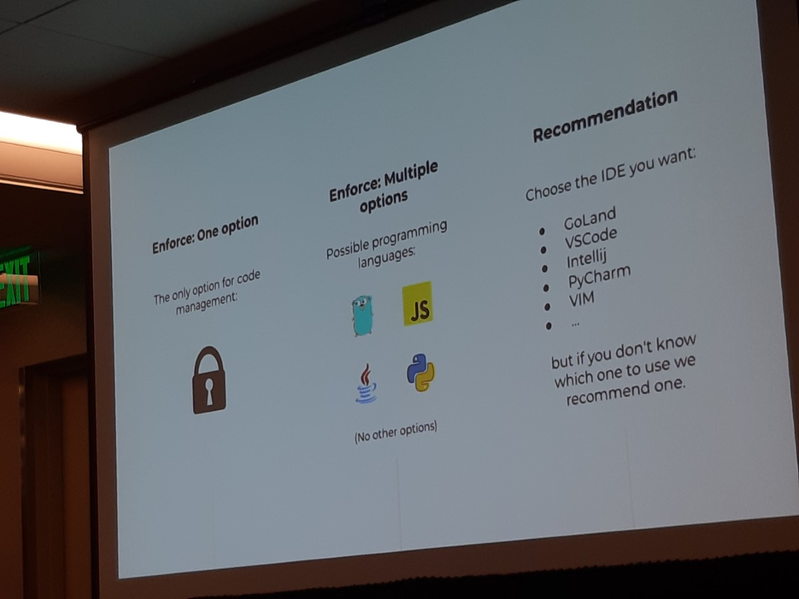

## QCon SF 2022 Sharing --- ### Today's content - Log4shell case studies - Running a platform team - CPU limits - Buildpacks --- ### Log4shell case studies <table> <thead><tr> <th></th> <th>Good</th> <th>Bad</th> <th>Ugly</th> </tr></thead> <tbody><tr> <td>Impact analysis</td> <td>Quickly identified impacted projects using SBOM database </td> <td>Scrambled to develop a git crawler to identify impacted projects</td> <td>Manual verification via emails to all app owners</td> </tr> </tbody> </table> --- ### Log4shell case studies <table> <thead><tr> <th></th> <th>Good</th> <th>Bad</th> <th>Ugly</th> </tr></thead> </tbody> <tr> <td>The fix</td> <td>Automated deployment and verification</td> <td>Automated deployment pipeline but no verification</td> <td>Manual fixing and semi automated deployments. Approval required from security team for fixes</td> </tr> </tbody> </table> --- ### Log4shell case studies <table> <thead><tr> <th></th> <th>Good</th> <th>Bad</th> <th>Ugly</th> </tr></thead> </tbody> <tr> <td>People impact</td> <td>No one missed vacations</td> <td>Burnt out, many canceled vacation</td> <td>Burnt out</td> </tr> <tr> <td>Culture</td> <td>Shared responsibility</td> <td>Shared responsibility</td> <td>Developers: "Not my problem"</td> </tr> </tbody> </table> --- ### Log4shell case studies <table> <thead><tr> <th></th> <th>Good</th> <th>Bad</th> <th>Ugly</th> </tr></thead> </tbody> <tr> <td>Duration of fix</td> <td>10 days for apps, 40 days for vendor apps</td> <td>80 days for apps and vendor apps</td> <td>x</td> </tr> </tbody> </table> --- ### Our Log4shell (IMHO) <table> <thead><tr> </tr></thead> </tbody> <tr> <td style="font-weight: bold;">Impact analysis</td> <td>Manual verification via emails to all app owners</td> </tr> <tr> <td style="font-weight: bold;">The fix</td> <td>Automated deployment pipeline but no verification</td> </tr> <tr> <td style="font-weight: bold;">People impact</td> <td>No one missed vacations</td> </tr> <tr> <td style="font-weight: bold;">Culture</td> <td>Shared responsibility</td> </tr> <tr> <td style="font-weight: bold;">Duration of fix</td> <td>I have no idea?</td> </tr> </tbody> </table> --- ### Our weakest: Impact analysis The fix starts with identifying what needs to be fixed <!-- .element: class="fragment" --> --- ### Framework - Know what to manage - When and how do we say we have a problem - The fix - Collaborative culture --- ### Assessment - Explore GitLab dependency scanning capabilities <!-- .element: class="fragment" --> - Generate SBOM, and store them - Sidetrack: Lyft <!-- .element: class="fragment" --> - As an org, did we do an AAR on the Log4j incident on how we can improve? <!-- .element: class="fragment" --> --- ## Running a platform team MercadoLibre - Practices that allowed them to scale from 2k to 10k engineers --- ### Fury <p class="r-stretch"> </p> - Their Backstage before Backstage - "Every need that a developer has, Backstage gives a solution" - Consistent developer experience <!-- .element: class="fragment" --> - Allows central decisions to be pushed across the company - CLI/Web UI <!-- .element: class="fragment" --> --- ### Why? - Save money - E.g. Give suggestions of cheaper instance types - Govern services <!-- .element: class="fragment" --> - E.g. Quality checks - Security with automated controls <!-- .element: class="fragment" --> - E.g. Track dependencies used --- ### Practices - Controlled freedom <p class="r-stretch">  </p> - Track and stabilise support issues <!-- .element: class="fragment" --> - Peaks right after every feature release --- ### Practices - Decision making - 90% decide sharply - 10% escalate to leader - 1% golden nuggets (decides travel of team) - Handling non-stardadised paths <!-- .element: class="fragment" --> - E.g. Experimentation/POC - Infra-as-code for compliance - Bootcamp to learn internal tools <!-- .element: class="fragment" --> --- ### Practices - Communication <!-- .element: class="fragment" --> - Newsletter - App notifications - Emails - Public roadmap <!-- .element: class="fragment" --> --- ### One of their trophies - Log4j - Patched in 1 day --- ### Assessment - Public roadmap <!-- .element: class="fragment" --> - Newsletter <!-- .element: class="fragment" --> - We have started to do this - Track support cost <!-- .element: class="fragment" --> - Identify concrete problem to solve (The Why?) <!-- .element: class="fragment" --> - What is "developer experience"? <!-- .element: class="fragment" --> - What is "make developer lives easier"? <!-- .element: class="fragment" --> --- ### CPU limits In most cases, using CPU limits on Kubernetes will unnecessarily throttle your workloads. --- ### CPU limits - Removed requirements for K8s workloads to have CPU limits - Added to go/devops --- ## Summary thus far - Log4j - Track software dependencies - Platform team - Practices & Why <!-- .element: class="fragment" --> - CPU limits <!-- .element: class="fragment" --> --- ## Cloud Native Buildpacks --- ### Code -> Container image ```Dockerfile # Dockerfile for Java FROM openjdk:17-jdk-slim-buster # fat.jar contains the java program and all its dependencies COPY fat.jar /app ENTRYPOINT java -jar /app/fat.jar ``` - Is this the best way? <!-- .element: class="fragment" --> - A change in dependency version will waste the entire layer <!-- .element: class="fragment" --> - How much memory to be give to JVM? Local PC vs K8s <!-- .element: class="fragment" --> - Wild wild west <!-- .element: class="fragment" --> - What about best practices? <!-- .element: class="fragment" --> --- ### Buildpacks - Opinionated way of code -> container image - Incorporate best practices --- ### Code -> Container image ```bash cd project_dir/ pack build image_name --builder paketobuildpacks/builder:base ``` --- ### How it works <p style="opacity: 0.2; font-size: 0.5em">Credits: AWS</p> <p class="fragment">Checks for specific filenames / environment variables</p> --- ### Example 1 <p class="r-stretch"> </p> --- ### Example 2 <p class="r-stretch"> </p> --- ### Some buildpacks https://github.com/GoogleCloudPlatform/buildpacks https://github.com/orgs/paketo-buildpacks/repositories --- ### The good - No more Dockerfile - Software Bill of Materials provided out of the box --- ### Catches - Some buildpacks call out to the internet... ``` failed to make request: Get "https://artifacts.paketo.io/python/python_3.10.9_linux_x64_jammy_6d3b804b.tgz": x509: certificate signed by unknown authority ``` - Figure out and change dev workflow - `docker-compose` --- ### To play around https://gitlab.com/csitsg/devops/golinks-backend-buildpacks/-/blob/master/BUILDPACKS.md --- ### Takeaways - Know that this tool/paradigm exists and what problems it tries to solve - Code -> Container image - Require deeper exploration on viability <!-- .element: class="fragment" --> --- ### Q&A